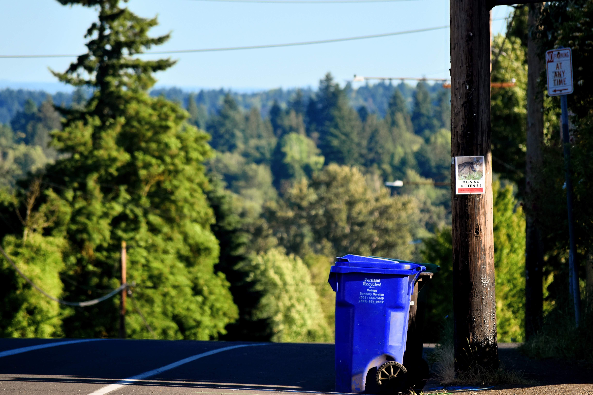

Multimedia
Videography

I like to create videos because visual representations of memories hold for a long time. I have been making videos since I was 17 years old, and it is an activity of mine that I still hold dear to my heart. Through my videos I have refined my skills of the Adobe Suite, specifically Adobe Audition and Premier Pro. With every video I create I always try to put my personal flavor into the editing, whether it be the visuals, transition effects, or most importantly, the music. Feel free to reach out if you want to collaborate on a project, or simply if you have general questions about my creative process. Click on the button for more information!
Photography


